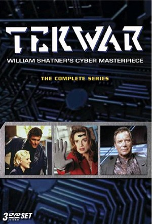

TekWar (1994)
ActionAdventureCrimeScience Fiction
| Year | 1994 |
|---|---|
| Rating | TV-PG |
| Status | Completed |
| Seasons | 2 |
| Episodes | 22 |
| Genre | Action, Adventure, Crime, Science Fiction |
The year is 2044, and the drug of choice is Tek - a mind-blowing virtual reality stimulant that has created a whole new breed of ruthless criminals. Star Trek legend William Shatner directs and stars in this stunning futuristic detective thriller based on his best-selling Tek novels.
Episodes
Specials
| # | Title | Air Date | Synopsis |
|---|---|---|---|
| 1 | TekWar | 1994-01-23 | Accused of dealing Tek and murdering his partners, ex-cop Jake Cardigan is sentenced to fifteen years in a cryogenic prison. |
| 2 | TekLords | 1994-02-24 | When his ex-wife is struck down by a computer virus which has been altered to attack the human nervous system, Jake Cardigan must race to track the deadly virus to it's source, one of the world's leading suppliers of the |
| 3 | TekLab | 1994-02-27 | A gala reception in the Tower of London marks the start of a campaign to restore the British monarchy. |
| 4 | TekJustice | 1994-05-14 | Jake is arrested for the murder of his ex-wife's husband.. |
Season 1
| # | Title | Air Date | Synopsis |
|---|---|---|---|
| 1 | Sellout | 1994-12-22 | Beth Kittridge is hired by Marty Dollar to find a way to make TEK non-addictive. Beth soon discovers that he is planning on lacing the music players with the main ingredient in TEK so he can sell these players to custome |
| 2 | Unknown Soldier | 1994-12-29 | When Electra helps Jake in a fight, he decides to assist her in getting a job at Cosmo. But Jake is unaware that Electra is an enhanced "X-Class" solider and she moonlights as an assassin. Her current target is Jake's bo |
| 3 | Tek Posse | 1995-01-05 | Jake is enticed by John Grant and his newly formed team known as the "Tek Posse". This is a group of men that operate above the law and have some of the best tools, including a mind prober, which is a prototype. One the |
| 4 | Promises to Keep | 1995-01-12 | Tom Weston went into hiding because he was making progress on a cure for TEK addiction. When he returns from the dead to reclaim his lost love, Jake must make the ultimate sacrifice. |
| 5 | Stay of Execution | 1995-01-19 | Alec Seeger takes control of Weathercon, making demands and threats. Jake is recruited to help and is partnered with an old partner of Alex's, Lianna. Lianna is a prisoner who has been temporarily released to help on th |
| 6 | Alter Ego | 1995-03-02 | Miles Connor was a TEK Lord that was caught and imprisoned in a cryogenic state. Connor seems to have re-appeared seeking revenge on those that put him away, which includes Jake and Sid. His body is discovered to be in |
| 7 | Killer Instinct | 1995-03-09 | When a cop is killed by a seemingly innocent and good teenage boy, Jake and Sid begin looking into reasons why this might have happened. They check out a new game that the boy had been playing and discover that someone h |
| 8 | Chill Factor | 1995-03-30 | Lowell was recently convicted and scheduled for cryogenic freezing and he injected himself with a virus. Although the virus I no threat, as it is a harmless form, the computers running the cryogenic system reacts to the |
| 9 | Deadline | 1995-04-06 | When Lieutenant Winger, an android, is attacked and his CRU (Cortical Relay Unit) is stolen; he finds himself needing the help of his biggest adversary, Jake. Winger has only 18 hours before his brain will shut down and |
| 10 | Carlotta's Room | 1995-04-13 | David Lane is a politician, who has fallen in love with a computer generate prostitute, Carlotta. Only he believes that she is real, being held hostage and being forced into this program. David decides to buy the program |
| 11 | Deep Cover | 1995-06-10 | Jake finds himself getting a new partner, Sam Houston and her first assigned is to infiltrate the Del Amo organization. Problem is that Cassandra and her brothers are running it and they have a device that reads your mi |
| 12 | Cyberhunt | 1995-06-17 | Nika gets herself into trouble when she hacks into cyberspace to find hidden bullion a favor to an old friend and because she feels under appreciated at Cosmos. Jake must intervene to rescue her from the law, the underwo |
| 13 | Zero Tolerance | 1995-06-24 | Peter and his sister, Rachel have discovered a potion that kills those who have used TEK. They contact Jake to join their movement as they feel he has made progress in the war. Jake joins the cause so he can find a way t |
| 14 | Forget Me Not | 1995-07-01 | Jake finds himself alone in an alley beaten and bruised with some memory loss. At Cosmos, it is discovered that memories were taken from Jake and that he must recover his missing memories or he will die. Through the inve |
| 15 | The Gate | 1996-01-20 | Danny and his friend, Peter meet Tina and follow her to a "Party". At this party, Peter uses a head set and ends up disappearing. Danny tries to find his friend on his own and ends up being trapped in some alternate rea |
| 16 | Skin Deep | 1996-01-27 | Sharon, Jake's old girlfriend, comes to him for help to solve her murder. The woman is a double and informs Jake the Sharon's husband killed her. She states that he is a major distributor of TEK and Sharon found out. Ja |
| 17 | Redemption | 1996-02-02 | Jake is ordered to provide security to one of the candidates running for Mayor. Frank Avery is a recovering TEK addict and Jake naturally does not like either politicians or addicts. The biggest threat is Brackett, the c |
| 18 | Betrayal | 1996-02-09 | It becomes apparent to Bascom that there is a security leak at Cosmos and he seeks outside help to identify the leak. Jake becomes the number one suspect, especially after the outside help is found murdered. |